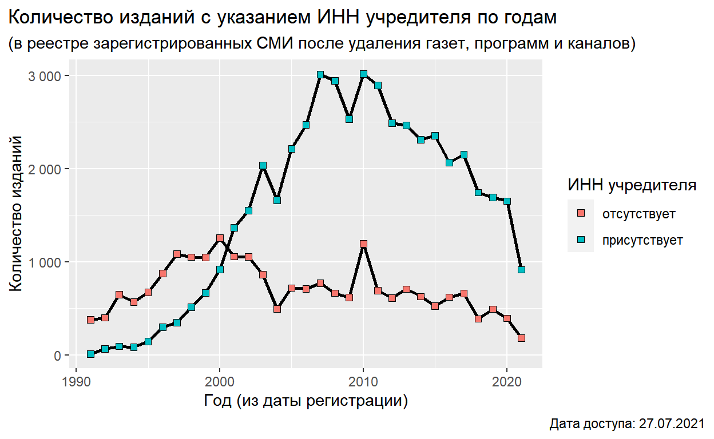

Описан практический подход к связыванию идентификаторов из RIRO с изданиями из реестра СМИ Роскомнадзора. На Github представлен R скрипт для парсинга XML файла РКН.
Несмотря на многообещающие возможности новых технологий и всё более открытые метаданные научных публикаций анализ российских научных изданий остается задачей творческой. Причин этому немало - от извечных противоречий о природе “национального” в научных изданиях до отсутствия открытых метаданных журналов. Международный регулятор ISSN.org, хотя и запустили открытый портал, но отдают лишь часть информации, предлагая всем заинтересованным в подробной информации купить доступ через OAI-PMH (от 8000 евро) или массив данных (20 тысяч евро). Их национальные подразделения вместо развития открытых реестров с современными режимами доступа предоставляя информацию посредством платных справок. В такой ситуации прогрессивную роль мог бы взять на себя крупнейший национальный агргегатор eLIBRARY.RU - например, выложить открытые метаданные индексируемых изданий. Надеемся, что однажды возьмет, а пока вся надежда… на государство.
Роскомнадзор (далее - РКН) публикует в виде открытых данных Перечень наименований зарегистрированных СМИ, где присутствует информация об учредителях, которую можно через ИНН привязать к организациям из RIRO.
Ниже показан общий подход к сопоставлению названий.
Данные можно скачать с сайта РКН (раздел Открытые данные) - файл имеет формат XML объемом более 100 Мб.
Скрипт на R для превращения данных в более удобную для работы таблицу CSV доступен на Github.
Итоговая таблица имеет вид:
dir <- paste0(onedrive, "/Journals/rkn/")
rkn_data <- paste0(dir, "data_rkn_wide.gz") %>%
read_csv(col_types = cols(.default = col_character()))
rkn_data[1:100,] %>%
datatable(rownames = FALSE, escape = FALSE,
class = "row-border",
caption = htmltools::tags$caption(
style = 'caption-side: top; text-align: left;',
paste0('Таблица 1: Фрагмент таблицы, созданной из реестра',
' зарегистрированных СМИ (дата доступа: 25.07.2021). ',
'Учредители журнала разделены по строкам, поэтому 1 разрешению ',
'в таблице может соответствовать несколько строк.')
),
options = list(columnDefs = list(
list(className = 'dt-center', targets = c(0, 3:4, 8,10,17, 18)),
list(width = '300px', targets = c(1, 11, 16)),
list(width = '600px', targets = c(19)),
list(width = '200px', targets = c(6,7, 9, 12)))))
Полученная из реестра таблица содержит ИНН (второй справа столбец founder_inn), поэтому задача сопоставления научных изданий с учредителями по ИНН с использованием RIRO решается просто.
t1 <- paste0(onedrive,"/RusOrgReg/final_tables/1.1.1/") %>%
list.files(full.names = TRUE) %>% .[grepl("table1_",.)] %>%
read_csv(col_types = cols(.default = col_character()))
by_inn <- rkn_data %>% filter(founder_inn %in% t1$inn)
by_inn[1:100,] %>%
datatable(rownames = FALSE, escape = FALSE,
class = "row-border",
caption = htmltools::tags$caption(
style = 'caption-side: top; text-align: left;',
paste0('Таблица 2: Фрагмент таблицы, созданной из реестра',
' зарегистрированных СМИ (дата доступа: 25.07.2021),',
' учредителями которых выступали организации, присутствующие ',
'в российском индексе научных организаций RIRO.')
),
options = list(columnDefs = list(
list(className = 'dt-center', targets = c(0, 3:4, 8,10,17, 18)),
list(width = '300px', targets = c(1, 11, 16)),
list(width = '600px', targets = c(19)),
list(width = '200px', targets = c(2, 6,7, 9, 12)))))
Полученная таким образом таблица содержит 4623 строк, в которых встречаются 4068 названий изданий и 1347 организаций. Полную таблицу найденных соответсвий в формате CSV (zip) можно скачать по ссылке.
Реестр РКН не включает печатные издания с “маленькими” тиражами, а также те издания, которые существуют исключительно в виде веб-сайта, но не зарегистрированы как СМИ.
Как свидетельствует картина ниже, не все записи к реестре РКН содержат ИНН.
inn_presence <- rkn_data %>%
mutate(year = as.integer(stringr::str_extract(reg_date, "\\d{4}"))) %>%
mutate(inn = ifelse(is.na(founder_inn), "отсутствует", "присутствует")) %>%
group_by(year, inn) %>%
summarize(n = n_distinct(name, na.rm = TRUE)) %>%
ungroup()
inn_presence %>%
filter(year>1990) %>%
ggplot()+
geom_line(aes(x = year, y = n, group = inn), size = 1)+
geom_point(aes(x = year, y = n, fill = inn), shape = 22, size = 2)+
labs(title = "Количество изданий с указанием ИНН учредителя по годам",
subtitle = "(в реестре зарегистрированных СМИ после удаления газет, программ и каналов)",
caption = "Дата доступа: 27.07.2021",
x = "Год (из даты регистрации)", y = "Количество изданий")+
scale_y_continuous(labels = scales::number_format(big.mark = " "))+
guides("fill" = guide_legend(title = "ИНН учредителя"))+
theme_gray() +
theme(plot.title.position = "plot",
plot.caption.position = "plot")

Самым простым вариантом обнаружения дополнительных соответствий является сопоставление названий учреждителей с полными или краткими названиями научных организаций в RIRO, а также поиск среди учредителей названий, содержащий фрагменты слов, типичных для научных организаций (например, “университ”, “академи”, “нии”, “научн”, “наук”, “исследовательск”, “клинич”, “здравоохр”, “библиот”, “институт”). Дополнительные возможности открывает столбец, в котором указан почтовый адрес учредителей, с помощью которого можно также найти организацию в RIRO.
Несмотря на то, что реестр РКН содержит неполный перечень научных изданий, полученный список может быть интересен для исследования эффекта запуска новых изданий и состава соучредителей на показатели публикационной активности учреждений.
Allaire J, Xie Y, McPherson J, Luraschi J, Ushey K, Atkins A, Wickham H, Cheng J, Chang W, Iannone R (2021). rmarkdown: Dynamic Documents for R. R package version 2.7, <URL: https://github.com/rstudio/rmarkdown>.
Wickham H (2020). tidyr: Tidy Messy Data. R package version 1.1.2, <URL: https://CRAN.R-project.org/package=tidyr>.
Wickham H (2016). ggplot2: Elegant Graphics for Data Analysis. Springer-Verlag New York. ISBN 978-3-319-24277-4, <URL: https://ggplot2.tidyverse.org>.
Wickham H (2019). stringr: Simple, Consistent Wrappers for Common String Operations. R package version 1.4.0, <URL: https://CRAN.R-project.org/package=stringr>.
Wickham H, Francois R, Henry L, Muller K (2021). dplyr: A Grammar of Data Manipulation. R package version 1.0.3, <URL: https://CRAN.R-project.org/package=dplyr>.
Wickham H, Hester J (2020). readr: Read Rectangular Text Data. R package version 1.4.0, <URL: https://CRAN.R-project.org/package=readr>.
Xie Y (2020). knitr: A General-Purpose Package for Dynamic Report Generation in R. R package version 1.30, <URL: https://yihui.org/knitr/>.
Xie Y (2015). Dynamic Documents with R and knitr, 2nd edition. Chapman and Hall/CRC, Boca Raton, Florida. ISBN 978-1498716963, <URL: https://yihui.org/knitr/>.
Xie Y (2014). “knitr: A Comprehensive Tool for Reproducible Research in R.” In Stodden V, Leisch F, Peng RD (eds.), Implementing Reproducible Computational Research. Chapman and Hall/CRC. ISBN 978-1466561595, <URL: http://www.crcpress.com/product/isbn/9781466561595>.
Xie Y, Allaire J, Grolemund G (2018). R Markdown: The Definitive Guide. Chapman and Hall/CRC, Boca Raton, Florida. ISBN 9781138359338, <URL: https://bookdown.org/yihui/rmarkdown>.
Xie Y, Cheng J, Tan X (2021). DT: A Wrapper of the JavaScript Library ‘DataTables’. R package version 0.17, <URL: https://CRAN.R-project.org/package=DT>.
Xie Y, Dervieux C, Riederer E (2020). R Markdown Cookbook. Chapman and Hall/CRC, Boca Raton, Florida. ISBN 9780367563837, <URL: https://bookdown.org/yihui/rmarkdown-cookbook>.
Text and figures are licensed under Creative Commons Attribution CC BY 4.0. The figures that have been reused from other sources don't fall under this license and can be recognized by a note in their caption: "Figure from ...".